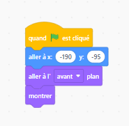

🎮 Joue au jeu Sonic
Clique sur le drapeau vert pour démarrer :
🎓 Crée ton propre Sonic
Choisis une partie pour voir le code pas à pas :

1 / 5
Un jeu de plateforme réalisé avec Scratch
Clique sur le drapeau vert pour démarrer :
Choisis une partie pour voir le code pas à pas :
